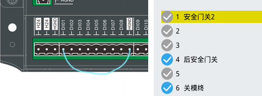

警报说明
1.关模过程：
1）使用“中子保护”：中子进终或退终触发开关无效。
2）不使用“中子保护”：中子进终触发开关无效。
2.注射前：
1）使用“中子保护”： 中子走行程控制同时进终触发开关无效。
3.托模前，调模进退前，自动调模前：
1）走行程时，中子退终触发开关无效。
2）走时间时，在开模联动中子选择使用，但是在当前动作前，中子却未退到位
4.开模联动托模：
1）中子退终触发开关无效或中子动作允许托模退标记无效；
排除方法
1.查看中子进终或退终输入点是否有效；
查看方法提示：如下图将原接线路脱开，用一根导线将对应的输入点端口与HCOM相连，再断开，查看对应编号指示是否变化。
